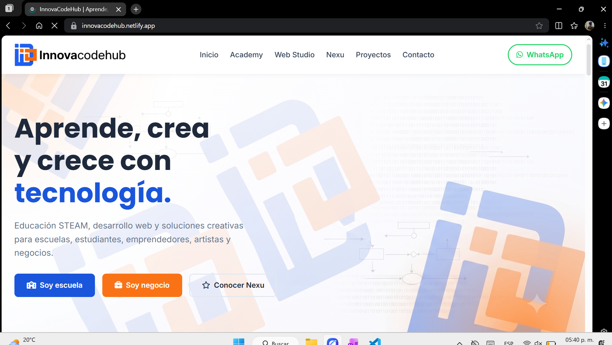
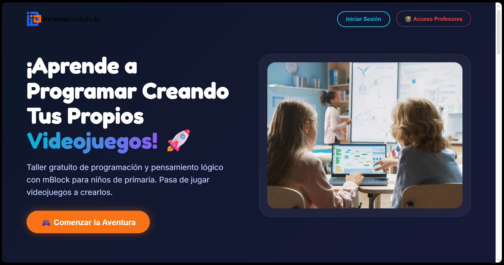

Presenta: Carlos Salazar Ramírez
Luis Angel Bandala Moreno
Impulsar la transformación digital de los negocios mediante el desarrollo de ecosistemas web optimizados y erradicar el analfabetismo tecnológico a través de programas de capacitación en competencias digitales, manteniendo siempre nuestras raíces.
Consolidarnos como la agencia digital líder, reconocida por acortar la brecha digital integrando estrategias MarTech, programación avanzada y educación accesible.
Basada en la innovación constante y la democratización del conocimiento. El capital humano no es un recurso, es el motor: programadores y diseñadores son los facilitadores que fusionan el código backend con estrategias de marketing visual.
Puesto: Desarrollador Full Stack / Director General
Reclutamiento enfocado en repositorios (GitHub) y referidos. La selección prioriza pruebas técnicas (estructuración de bases de datos o maquetado de UI) sobre psicometría tradicional.
Esquema de alto rendimiento (Milestone Pay). El talento recibe honorarios variables por proyecto entregado y aprobado. El principal beneficio es el esquema remoto asíncrono y la flexibilidad total para empatar el trabajo con estudios universitarios.
Evaluación basada en entregables: limpieza del código, estética funcional (UI/UX) y un límite estandarizado en rondas de revisión. La retención se logra permitiendo que los colaboradores utilicen los proyectos en sus portafolios personales y fomentando un clima sin burocracia corporativa.


En estricto apego al objetivo del proyecto, se ha contrastado la teoría abordada en el semestre con la realidad operativa de InnovaCodeHub, identificando las siguientes ausencias de procesos teóricos tradicionales:
*Nota: Estas ausencias no se diagnostican como fallos operativos de la agencia, sino como adaptaciones necesarias a la realidad del sector MarTech y freelance.